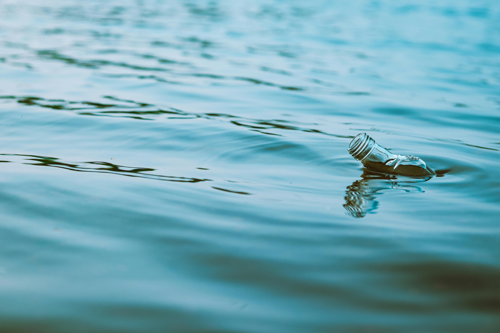

About this site

Photo by Dhilip Antony: Pexels.
This website is dedicated to raising awareness about the critical issue of plastic pollution in our oceans. Plastic waste is accumulating in marine environments, endangering wildlife, polluting water, and threatening ecosystems. The goal of this site is to inform visitors about the impact of plastic pollution, how it harms ocean life, and what we can do to reduce plastic waste and protect our seas.